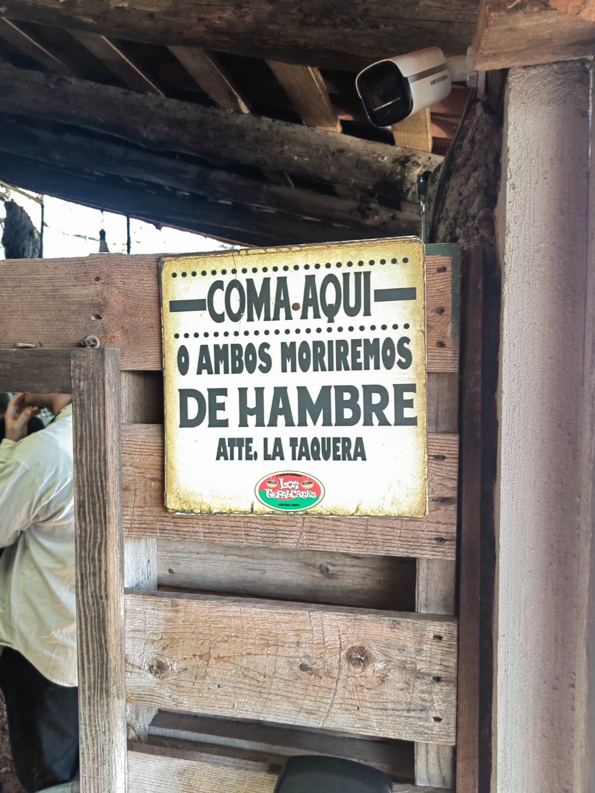
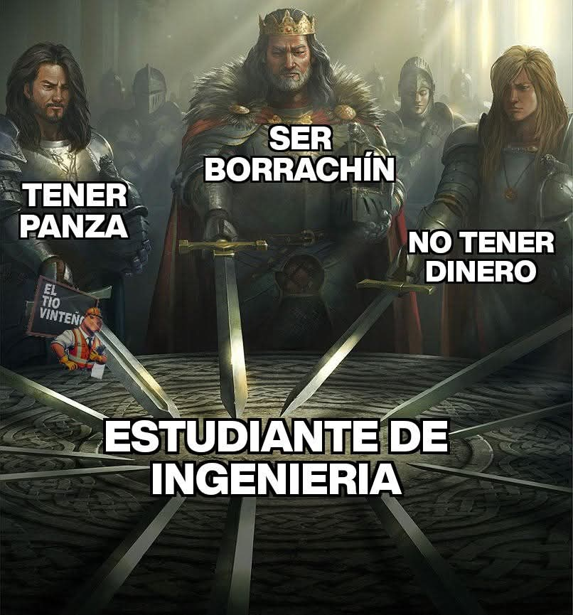
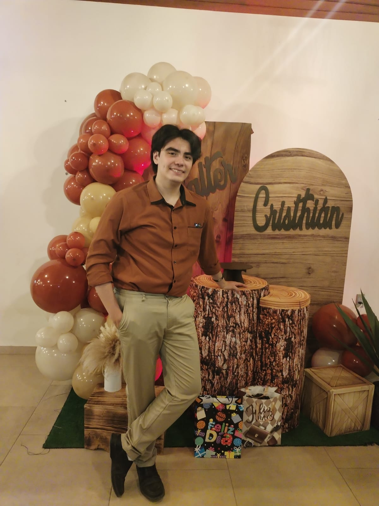
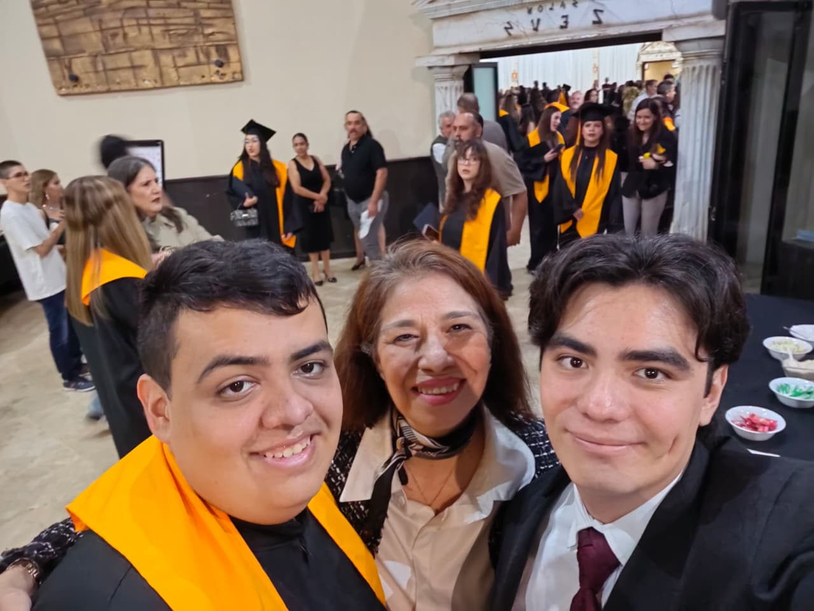
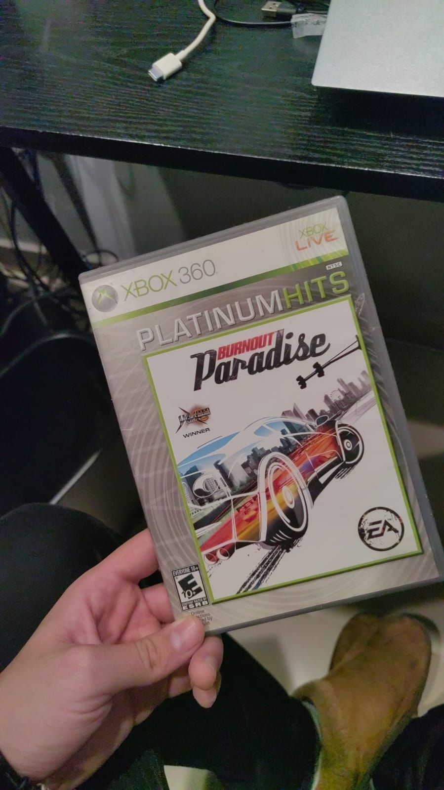

Este fin de semana he estado probando diferentes cosas en mi blog, y he aprendido mucho sobre el desarrollo web. Algo que he aprendido es que no todo lo que parece difícil es realmente difícil, y que con práctica y paciencia se puede lograr cualquier cosa. Además, he descubierto que el programar con un trago de whisky a la mano es una forma muy divertida de programar sin sentirme trizte por estar solo.
Los Tepalcates
Restaurante mexicano en Palo Alto 🇲🇽

Llendo al pueblo de donde es originaria mi familia, se encuentra este restaurante de cominda méxcana a la altura de palo alto, su nombre es Los Tepalcates. Se los recomiendo mucho, a parte de vender comida, tambien venden dulces, plantas y artesanias.
Tal cual
La trizte realidad 😥

Cualquier estudiante de ingeniería tiene al menos dos de estas tres.
Mi cumpleaños número 21
No hay nada mejor que festejar en familia 🥳

Me sentí muy feliz de celebrar mi cumpleaños con mi familia, fue una gran experiencia. Tecnicamente en ese momento no era mi cumpleaños, pero lo festejamos antes junto con mi padrino ya que nuestros cumpleaños se separan por una semana, ademas, estabamos festejando la graduación de mi hermano, asique aplicamos un 3 en uno, para festejar la graduación de mi hermano, el cumpleaños de mi padrino y mi cumpleaños.
La graduación de mi hermano
Un momento inolvidable 🎓

Por si alguien aún no lo sabía, mi hermano rodrigo es autista, por lo que toda la vida ha sido un reto para él y para todos, pero ese día logramos hacer lo que mucha gente nos decía que era imposible, mi hermano se egresó de la carrera de diseño gráfico digital de la UNID despues de años de sacrificio y muchos gastos. Estoy argulloso porque al final lo logró, y sobre todo porque Rodrigo le cerro el osico a toda la gente que nos decía que no podía hacerlo.
Donde comenzó todo
Mi primer videojuego

Este es el Burnoun Paradice City, el primer videojuego de consola que jugué, unos meses despues del fallecimeinto de mi papá, mi mamá nos compró a rodrigo y a mi un Xbox 360 junto con este juego. cuando lo inicié por primera vez, quedé encantado con el nivel de detalle que tenian los carros, sonido que hacian, la música de la radio. con muchas cosas, este juego me hizo enamorarme del mundo de los videojuegos. Me plantó la idea de: ¿Y si pudiera crear mis propios videojuegos?. y en parte gracias a eso estoy donde estoy actualmente.